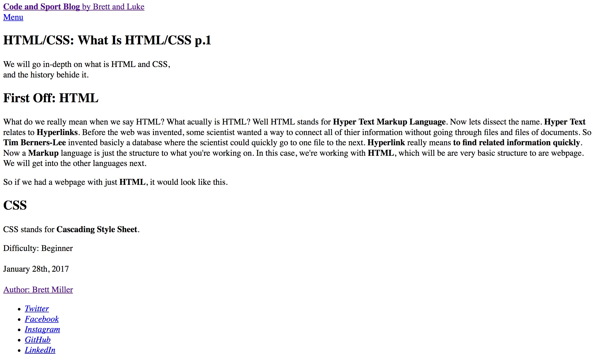
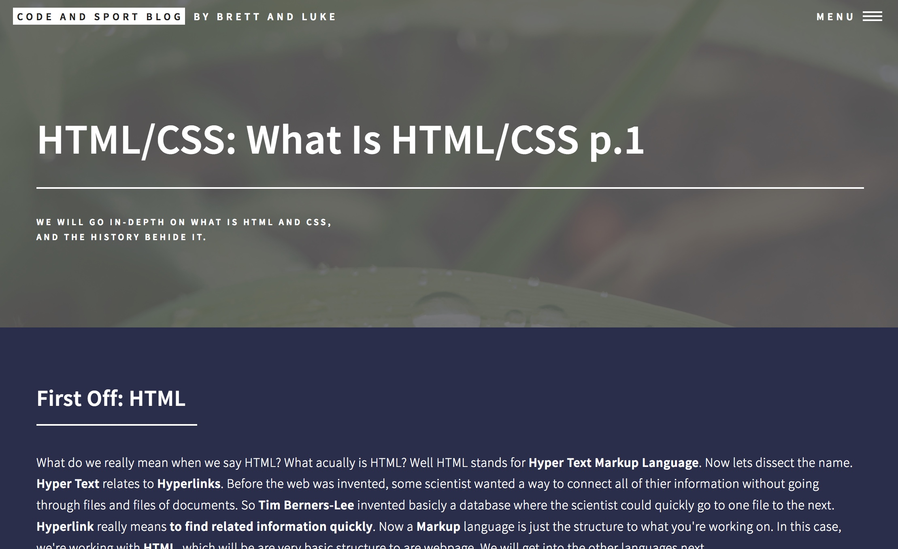

We will go in-depth on what is HTML and CSS,
and the history behide it.
First Off: HTML
What do we really mean when we say HTML? What acually is HTML? Well HTML stands for HyperText Markup Language. Now lets dissect the name. HyperText relates to Hyperlinks. Before the web was invented, some scientist wanted a way to connect all of thier information without going through files and files of documents. So Tim Berners-Lee invented basicly a database where the scientist could quickly go to one file to the next. Hyperlink really means to find related information quickly. Now a Markup language is just the structure to what you're working on. In this case, we're working with HTML, which will be are very basic structure to are webpage. We will get into the other languages next.
So if we had a webpage with just HTML, it would look like this.

CSS
CSS stands for Cascading Style Sheet. This is the language you use to style your webpage. Cascading means it styles from the top of the webpage to the bottom. With CSS you can do everything like changing colors, fonts, sizes of elements, and re-postioning elements.
Here's what a page could look like with CSS

Javascript
Javascript is a language for web applications unlike Java. On web sites we use Javascript for transitions or animations. Whenever you hover over a menu bar and a dropbox pulls down or there's a smooth fade of something, that's using Javascript.
Difficulty: Beginner
January 28th, 2017
Author: Brett Miller